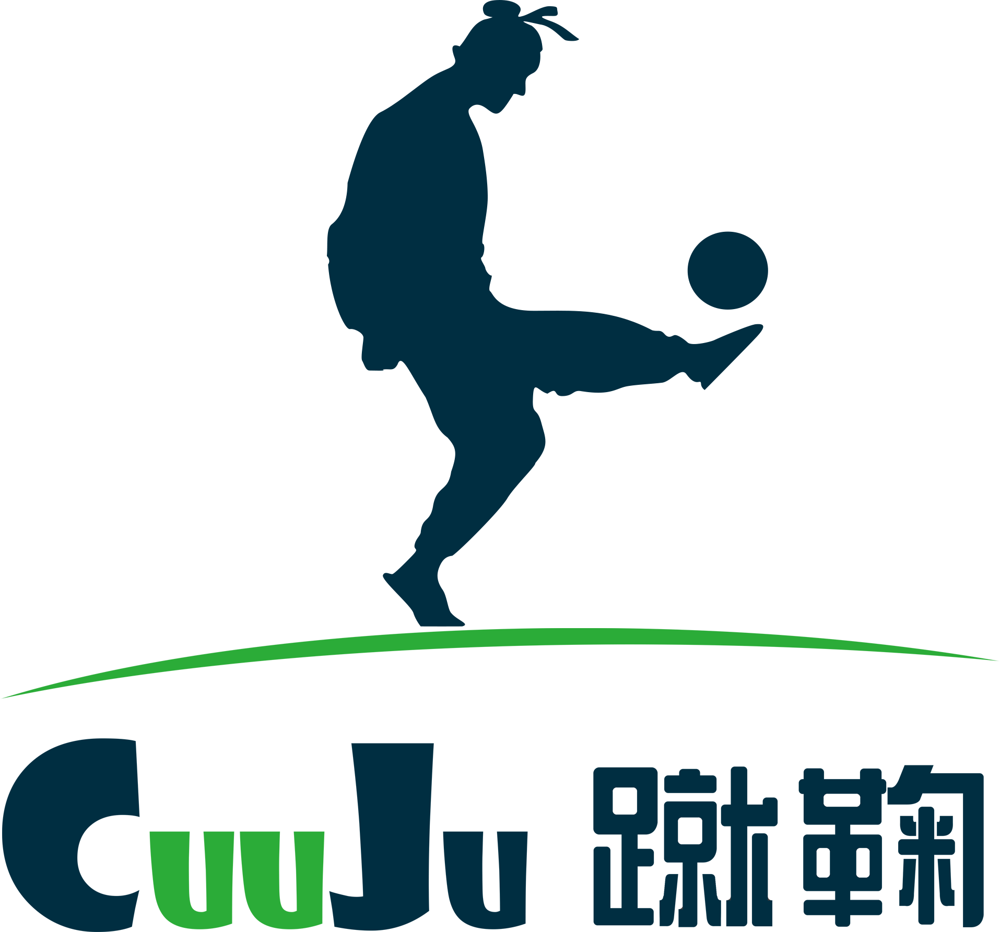

选择你要参加竞猜的比赛
选择你预测的比赛结果
确认提交后,等待球赛结果
小组赛可猜比赛胜负平结果，淘汰赛可猜比赛最终胜负结果（以加时赛结果为准）
（1） 参与竞猜，猜中即可获得1/12的千元电商大礼包
（2） 参与小组赛竞猜，猜中即可获得一次抽奖机会，参与淘汰赛竞猜，猜中即可获得两次抽奖机会。
（3） 抽奖大转盘将在24号00:00开启，使用抽奖机会即有可能获得乐视超级电视、iPhone6s、暴风魔镜、小米蓝牙耳机、小米手环、定制玩偶、马克杯、定制耳机等礼品。
参与竞猜后关注蹴鞠足球微信公众号，我们将在比赛结束后对于中奖消息进行推送，点击你的中奖消息，即可进入你的礼品大厅，在礼品大厅填写你的姓名、联系方式和地址，我们将在七个工作日内，将奖品邮寄到你的手中。（p.s. 本活动不支持国外用户奖品寄送）
竞猜活动分为2期，第一期为小组赛（6月8日-6月23日21:00），第二期为淘汰赛（6月23日21:00-7月11日）。比赛开始前72小时，竞猜开始，比赛前一小时比赛入口关闭。
蹴鞠足球——精与勤，忠于您！
蹴鞠足球——更专业的赛事管理服务！
蹴鞠足球——更专业的场地管理服务！
蹴鞠足球——因为专业，所以卓越！
活动最终解释权在法律范围内归蹴鞠足球所有